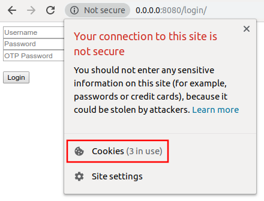
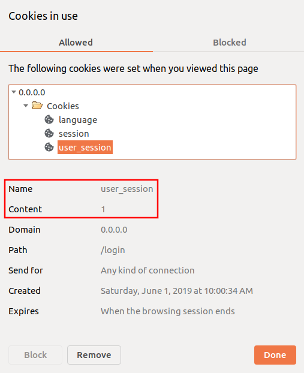

Login System Tutorial Part 5 - Session and Cookie¶
In this tutorial, we will talk about getting the session key if the user login is valid and setting an HTTP cookie for the user session.
Go to login.go in handlers folder and call the login function from the user that passes the password and OTP. If both parameters are valid, it will return the session key.
// Pass the requested password and OTP code to return the
// session key
session := user.Login(password, otpPass)
// Print the result
uadmin.Trail(uadmin.DEBUG, "Session: %s", session)
Now go to the login path in the address bar (e.g. http://0.0.0.0:8080/login/). Assign the username, password, and OTP password fetched from the 2FA image in /admin/profile/ path in the address bar or assigned on your terminal in the login form (e.g. admin, admin, 123456). Click Login button to submit.

Check your terminal for the result.
[ DEBUG ] Session: oje80dRvSM7cOXZgheqatsfw
Exit your application. Go to login.go in handlers folder and apply the following codes below:
// Check if the session is fetched from the Login function
if session != nil {
// Create a cookie named "user_session" with the value of
// UserID
usersession := &http.Cookie{
Name: "user_session",
Value: fmt.Sprint(user.ID),
}
// Check whether the OTP value from Login function is true
// and the OTP Password is valid
if otp == true && user.VerifyOTP(otpPass) {
// Set the "user_session" cookie to the IP Address
http.SetCookie(w, usersession)
}
// Check whether the OTP value from Login function is false
// and the OTP Password is not assigned
if otp == false && otpPass == "" {
// Set the "user_session" cookie to the IP Address
http.SetCookie(w, usersession)
}
}
The single most important job of a cookie is to keep a user logged in as they browse from page to page. A user’s browsing history becomes part of a database which the website then uses to improve the user experience. 1
Run your application. Go to the login path in the address bar (e.g. http://0.0.0.0:8080/login/). Assign the username, password, and OTP password fetched from the 2FA image in /admin/profile/ path in the address bar or assigned on your terminal in the login form (e.g. admin, admin, 123456). Click Login button to submit.
Click the i icon on the left side of the address bar then select Cookies.
As expected, the user_session cookie was stored in the domain with the value of 1 that is the UserID of the admin.
In the next part, we will discuss about redirecting a webpage after the user submits a form and passing the data object to the Home Page.
Click here to view the full source code in this part.
Reference¶
- 1
BigCommerce Pty. Ltd. (2019). What is a cookie and why is it important? Retrieved from https://www.bigcommerce.com/ecommerce-answers/what-cookie-and-why-it-important/